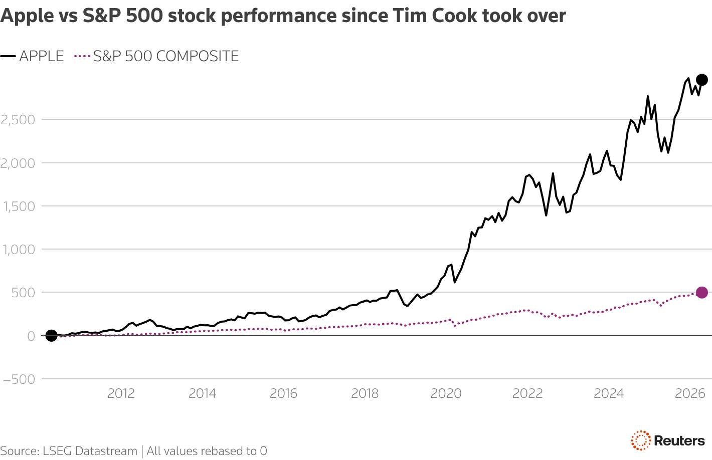

Tech overwhelms Iran tension
Sentiment was also boosted by Amazon's announcement on Monday that it plans to invest up to $25 billion in AI startup Anthropic. That follows its $50 billion investment in OpenAI earlier this year.
Those deals will set the tone as U.S. tech earnings get underway this week, with Tesla reporting earnings on Wednesday. Meantime, Elon Musk's SpaceX is holding closed-door analyst briefings this week ahead of a record-breaking IPO later in the year.
Apple's shares, meanwhile, largely shrugged off the announcement that hardware chief John Ternus would succeed Tim Cook as CEO from September. Cook is set to remain on the board as executive chairman after 15 years at the helm.
Today's key chart

Graphics are produced by Reuters.
Apple named longtime hardware boss John Ternus as its next CEO, turning to another insider to steer the iPhone maker after Tim Cook as it navigates a world radically altered by artificial intelligence, a technology it has lagged on. Cook, a supply-chain genius who boosted Apple's market value by $3.6 trillion in his 15 years at the helm, will stay on as executive chairman when Ternus takes over on September 1.